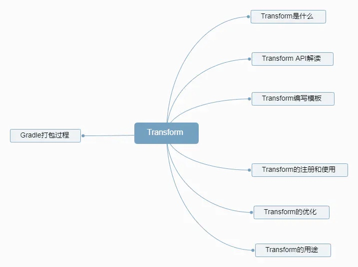
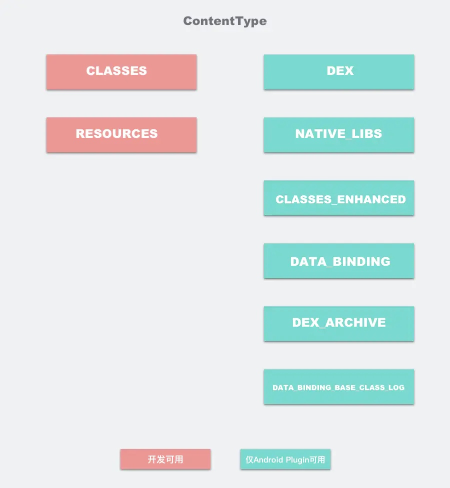
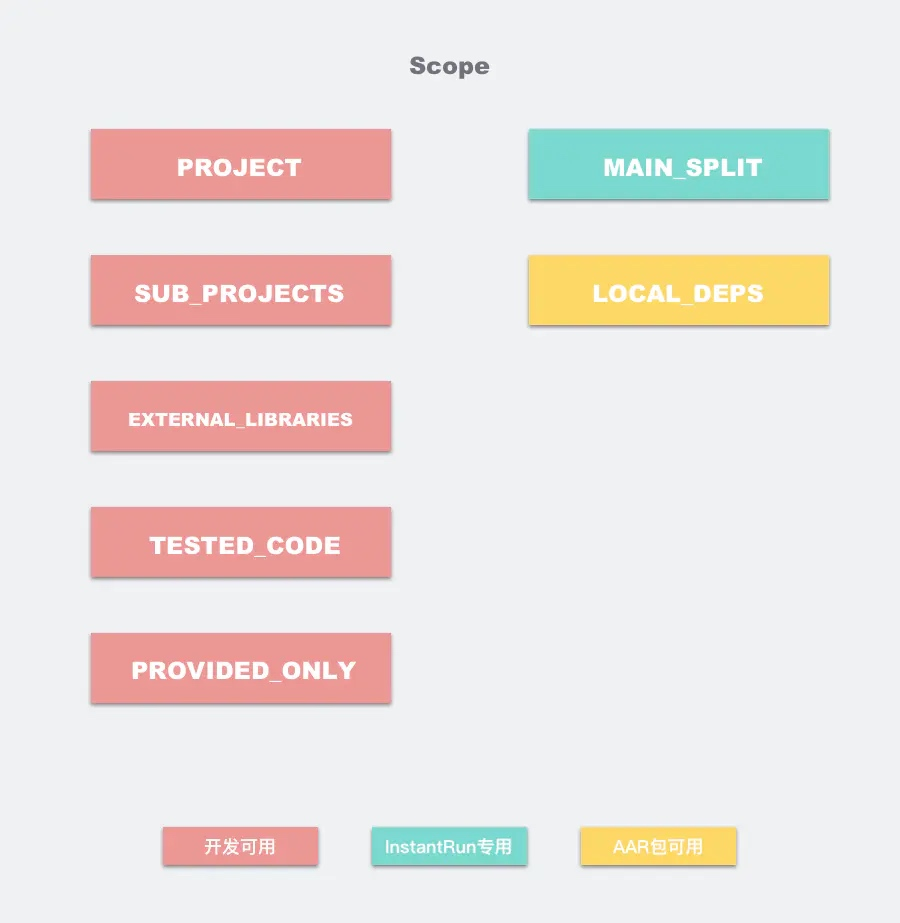
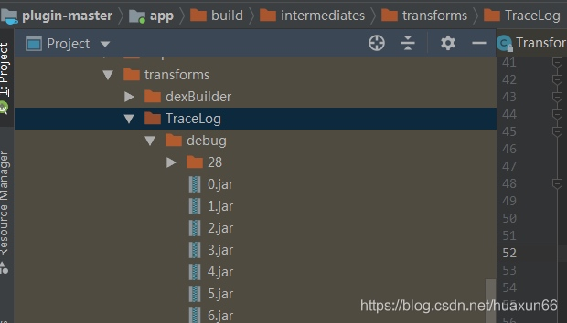

知识点

1. 打包过程
要了解Transform，首先我们需要知道Gradle构建一个安卓应用，会经过哪些步骤。

上图是谷歌官网给出的一个典型的apk构建的过程，比较概括。主要包括两个过程，首先是编译过程，编译的内容包括本工程的文件以及依赖的各种库文件，编译的输出包括dex文件和编译后的资源文件。然后是打包过程。配合Keystore对第一步的输出进行签名对齐，生成最终的apk文件。

上面这张图对上面的步骤以及每步用到的工具进行了细分，概括如下：
Java编译器对工程本身的java代码进行编译，这些java代码有三个来源：app的源代码，由资源文件生成的R文件(aapt工具)，以及有aidl文件生成的java接口文件(aidl工具)。产出为.class文件。
.class文件和依赖的三方库文件通过dex工具生成Delvik虚拟机可执行的.dex文件，可能有一个或多个，包含了所有的class信息，包括项目自身的class和依赖的class。产出为.dex文件。
apkbuilder工具将.dex文件和编译后的资源文件生成未经签名对齐的apk文件。这里编译后的资源文件包括两部分，一是由aapt编译产生的编译后的资源文件，二是依赖的三方库里的资源文件。产出为未经签名的.apk文件。
分别由Jarsigner和zipalign对apk文件进行签名和对齐，生成最终的apk文件。
2. 什么是Transform
简单介绍：
从android-build-tool:gradle:1.5开始，gradle插件包含了一个叫Transform的API，这个API允许第三方插件在class文件转为为dex文件前操作编译好的class文件，这个API的目标就是简化class文件的自定义的操作而不用对Task进行处理。
作用域：
Transform是作用在.class编译后，打包成.dex前，可以对.class和resource进行再处理的部分。
为了印证，我们随便建立一个项目Build的一次。

可以很清楚的看到，原生就带了一系列Transform供使用。那么这些Transform是怎么组织在一起的呢，我们用一张图表示：

每个Transform其实都是一个gradle task，Android编译器中的TaskManager将每个Transform串连起来，第一个Transform接收来自javac编译的结果，以及已经拉取到在本地的第三方依赖（jar. aar），还有resource资源，注意，这里的resource并非android项目中的res资源，而是asset目录下的资源。 这些编译的中间产物，在Transform组成的链条上流动，每个Transform节点可以对class进行处理再传递给下一个Transform。我们常见的混淆，Desugar等逻辑，它们的实现如今都是封装在一个个Transform中，而我们自定义的Transform，会插入到这个Transform链条的最前面。
但其实，上面这幅图，只是展示Transform的其中一种情况。而Transform其实可以有两种输入，一种是消费型的，当前Transform需要将消费型型输出给下一个Transform，另一种是引用型的，当前Transform可以读取这些输入，而不需要输出给下一个Transform，比如Instant Run就是通过这种方式，检查两次编译之间的diff的。
最终，我们定义的Transform会被转化成一个个TransformTask，在Gradle编译时调用。
TransformManager.class
/**
* Adds a Transform.
*
* <p>This makes the current transform consumes whatever Streams are currently available and
* creates new ones for the transform output.
*
* <p>his also creates a {@link TransformTask} to run the transform and wire it up with the
* dependencies of the consumed streams.
*
* @param taskFactory the task factory
* @param scope the current scope
* @param transform the transform to add
* @param callback a callback that is run when the task is actually configured
* @param <T> the type of the transform
* @return {@code Optional<AndroidTask<Transform>>} containing the AndroidTask for the given
* transform task if it was able to create it
*/
@NonNull
public <T extends Transform> Optional<TransformTask> addTransform(
@NonNull TaskFactory taskFactory,
@NonNull TransformVariantScope scope,
@NonNull T transform,
@Nullable TransformTask.ConfigActionCallback<T> callback) {
if (!validateTransform(transform)) {
// validate either throws an exception, or records the problem during sync
// so it's safe to just return null here.
return Optional.empty();
}
List<TransformStream> inputStreams = Lists.newArrayList();
String taskName = scope.getTaskName(getTaskNamePrefix(transform));
// get referenced-only streams
List<TransformStream> referencedStreams = grabReferencedStreams(transform);
// find input streams, and compute output streams for the transform.
IntermediateStream outputStream = findTransformStreams(
transform,
scope,
inputStreams,
taskName,
scope.getGlobalScope().getBuildDir());
if (inputStreams.isEmpty() && referencedStreams.isEmpty()) {
// didn't find any match. Means there is a broken order somewhere in the streams.
issueReporter.reportError(
Type.GENERIC,
new EvalIssueException(
String.format(
"Unable to add Transform '%s' on variant '%s': requested streams not available: %s+%s / %s",
transform.getName(),
scope.getFullVariantName(),
transform.getScopes(),
transform.getReferencedScopes(),
transform.getInputTypes())));
return Optional.empty();
}
//noinspection PointlessBooleanExpression
if (DEBUG && logger.isEnabled(LogLevel.DEBUG)) {
logger.debug("ADDED TRANSFORM(" + scope.getFullVariantName() + "):");
logger.debug("\tName: " + transform.getName());
logger.debug("\tTask: " + taskName);
for (TransformStream sd : inputStreams) {
logger.debug("\tInputStream: " + sd);
}
for (TransformStream sd : referencedStreams) {
logger.debug("\tRef'edStream: " + sd);
}
if (outputStream != null) {
logger.debug("\tOutputStream: " + outputStream);
}
}
transforms.add(transform);
// create the task...
TransformTask task =
taskFactory.create(
new TransformTask.ConfigAction<>(
scope.getFullVariantName(),
taskName,
transform,
inputStreams,
referencedStreams,
outputStream,
recorder,
callback));
return Optional.ofNullable(task);
}
3.Transform解读
我们首先先定义一个自定义的Transform，需要实现如下方法。
class AspectJTransform extends Transform {
final String NAME = "AjcTransform"
@Override
String getName() {
return NAME
}
@Override
Set<QualifiedContent.ContentType> getInputTypes() {
return TransformManager.CONTENT_CLASS
}
@Override
Set<? super QualifiedContent.Scope> getScopes() {
return TransformManager.SCOPE_FULL_PROJECT
}
@Override
boolean isIncremental() {
return true
}
@Override
void transform(TransformInvocation transformInvocation) throws TransformException, InterruptedException, IOException {
super.transform(transformInvocation)
}
}
我们一项项分析：
(1)getName()
@Override
String getName() {
return "TraceLog"
}
Name顾名思义，就是我们的Transform名称，再回到我们刚刚Build的流程里：
这个最终的名字是如何构成的呢？好像跟我们这边的定义的名字有区别。以transform开头，之后拼接ContentType，这个ContentType代表着这个Transform的输入文件的类型，类型主要有两种，一种是Classes，另一种是Resources，ContentType之间使用And连接，拼接完成后加上With，之后紧跟的就是这个Transform的Name，name在getName()方法中重写返回即可。代码如下
@NonNull
static String getTaskNamePrefix(@NonNull Transform transform) {
StringBuilder sb = new StringBuilder(100);
sb.append("transform");
sb.append(
transform
.getInputTypes()
.stream()
.map(
inputType ->
CaseFormat.UPPER_UNDERSCORE.to(
CaseFormat.UPPER_CAMEL, inputType.name()))
.sorted() // Keep the order stable.
.collect(Collectors.joining("And")));
sb.append("With");
StringHelper.appendCapitalized(sb, transform.getName());
sb.append("For");
return sb.toString();
}
(2)getInputTypes()
@Override
Set<QualifiedContent.ContentType> getInputTypes() {
return TransformManager.CONTENT_CLASS
}
先来看代码注释，注释写的很清晰了，必须是CLASSES(0x01),RESOURCES(0x02)之一，相当于Transform需要处理的类型。
/**
* Returns the type(s) of data that is consumed by the Transform. This may be more than
* one type.
*
* <strong>This must be of type {@link QualifiedContent.DefaultContentType}</strong>
*/
@NonNull
public abstract Set<ContentType> getInputTypes();
----------------------------------
/**
* The type of of the content.
*/
enum DefaultContentType implements ContentType {
/**
* The content is compiled Java code. This can be in a Jar file or in a folder. If
* in a folder, it is expected to in sub-folders matching package names.
*/
CLASSES(0x01),
/** The content is standard Java resources. */
RESOURCES(0x02);
private final int value;
DefaultContentType(int value) {
this.value = value;
}
@Override
public int getValue() {
return value;
}
}

(3)getScopes()
@Override
Set<? super QualifiedContent.Scope> getScopes() {
return TransformManager.SCOPE_FULL_PROJECT
}
先来看源码注释，这个的作用相当于用来Transform表明作用域
/**
* Returns the scope(s) of the Transform. This indicates which scopes the transform consumes.
*/
@NonNull
public abstract Set<Scope> getScopes();
开发一共可以选如下几种：
/**
* The scope of the content.
*
* <p>
* This indicates what the content represents, so that Transforms can apply to only part(s)
* of the classes or resources that the build manipulates.
*/
enum Scope implements ScopeType {
/** Only the project (module) content */
PROJECT(0x01),
/** Only the sub-projects (other modules) */
SUB_PROJECTS(0x04),
/** Only the external libraries */
EXTERNAL_LIBRARIES(0x10),
/** Code that is being tested by the current variant, including dependencies */
TESTED_CODE(0x20),
/** Local or remote dependencies that are provided-only */
PROVIDED_ONLY(0x40),
/**
* Only the project's local dependencies (local jars)
*
* @deprecated local dependencies are now processed as {@link #EXTERNAL_LIBRARIES}
*/
@Deprecated PROJECT_LOCAL_DEPS(0x02),
/**
* Only the sub-projects's local dependencies (local jars).
*
* @deprecated local dependencies are now processed as {@link #EXTERNAL_LIBRARIES}
*/
@Deprecated SUB_PROJECTS_LOCAL_DEPS(0x08);
一般来说如果是要处理所有class字节码，Scope我们一般使用TransformManager.SCOPE_FULL_PROJECT。即
public static final Set<Scope> SCOPE_FULL_PROJECT = Sets.immutableEnumSet(Scope.PROJECT, Scope.SUB_PROJECTS, Scope.EXTERNAL_LIBRARIES);
还有一些其他的可以参考下。

(4)isIncremental()
@Override
boolean isIncremental() {
return true
}
增量编译开关。当我们开启增量编译的时候，相当input包含了changed/removed/added三种状态，实际上还有notchanged。需要做的操作如下：
- NOTCHANGED: 当前文件不需处理，甚至复制操作都不用；
- ADDED、CHANGED: 正常处理，输出给下一个任务；
- REMOVED: 移除outputProvider获取路径对应的文件。
(5)transform()
@Override
void transform(TransformInvocation transformInvocation) throws TransformException, InterruptedException, IOException {
super.transform(transformInvocation)
......
}
先来看一下源码注释，它是Transform处理文件的核心代码：
/**
* Executes the Transform.
*
* <p>The inputs are packaged as an instance of {@link TransformInvocation}
* <ul>
* <li>The <var>inputs</var> collection of {@link TransformInput}. These are the inputs
* that are consumed by this Transform. A transformed version of these inputs must
* be written into the output. What is received is controlled through
* {@link #getInputTypes()}, and {@link #getScopes()}.</li>
* <li>The <var>referencedInputs</var> collection of {@link TransformInput}. This is
* for reference only and should be not be transformed. What is received is controlled
* through {@link #getReferencedScopes()}.</li>
* </ul>
*
* A transform that does not want to consume anything but instead just wants to see the content
* of some inputs should return an empty set in {@link #getScopes()}, and what it wants to
* see in {@link #getReferencedScopes()}.
*
* <p>Even though a transform's {@link Transform#isIncremental()} returns true, this method may
* be receive <code>false</code> in <var>isIncremental</var>. This can be due to
* <ul>
* <li>a change in secondary files ({@link #getSecondaryFiles()},
* {@link #getSecondaryFileOutputs()}, {@link #getSecondaryDirectoryOutputs()})</li>
* <li>a change to a non file input ({@link #getParameterInputs()})</li>
* <li>an unexpected change to the output files/directories. This should not happen unless
* tasks are improperly configured and clobber each other's output.</li>
* <li>a file deletion that the transform mechanism could not match to a previous input.
* This should not happen in most case, except in some cases where dependencies have
* changed.</li>
* </ul>
* In such an event, when <var>isIncremental</var> is false, the inputs will not have any
* incremental change information:
* <ul>
* <li>{@link JarInput#getStatus()} will return {@link Status#NOTCHANGED} even though
* the file may be added/changed.</li>
* <li>{@link DirectoryInput#getChangedFiles()} will return an empty map even though
* some files may be added/changed.</li>
* </ul>
*
* @param transformInvocation the invocation object containing the transform inputs.
* @throws IOException if an IO error occurs.
* @throws InterruptedException
* @throws TransformException Generic exception encapsulating the cause.
*/
public void transform(@NonNull TransformInvocation transformInvocation)
throws TransformException, InterruptedException, IOException {
// Just delegate to old method, for code that uses the old API.
//noinspection deprecation
transform(transformInvocation.getContext(), transformInvocation.getInputs(),
transformInvocation.getReferencedInputs(),
transformInvocation.getOutputProvider(),
transformInvocation.isIncremental());
}
大致意思如下，具体大家一定要仔细看注释：
- 如果拿取了getInputs()的输入进行消费，则transform后必须再输出给下一级
- 如果拿取了getReferencedInputs()的输入，则不应该被transform。
- 是否增量编译要以transformInvocation.isIncremental()为准。
在 transform 方法中主要做的事情就是把 Inputs 保存到 outProvider 提供的位置去。生成的位置见下图：

后面会讲到代码，主要有两个 transform 方法，一个 transformJar 就是简单的拷贝，另一个 transformDirectory，我们就是在这里用 ASM 对字节码进行修改的。
(6)getSecondaryFiles()
上面transform函数这里还提到了一个东西叫
secondary files ({@link #getSecondaryFiles()}
网上Transform的讲解对它的提及比较少，先看看注释，它和我们之前介绍的一样，有一系列API：
/**
* Returns a list of additional file(s) that this Transform needs to run. Preferably, use
* {@link #getSecondaryFiles()} API which allow eah secondary file to indicate if changes
* can be handled incrementally or not. This API will treat all additional file change as
* a non incremental event.
*
* <p>Changes to files returned in this list will trigger a new execution of the Transform
* even if the qualified-content inputs haven't been touched.
*
* <p>Any changes to these files will trigger a non incremental execution.
*
* <p>The default implementation returns an empty collection.
*
* @deprecated replaced by {@link #getSecondaryFiles()}
*/
@Deprecated
@NonNull
public Collection<File> getSecondaryFileInputs() {
return ImmutableList.of();
}
/**
* Returns a list of additional file(s) that this Transform needs to run.
*
* <p>Changes to files returned in this list will trigger a new execution of the Transform
* even if the qualified-content inputs haven't been touched.
*
* <p>Each secondary input has the ability to be declared as necessitating a non incremental
* execution in case of change. This Transform can therefore declare which secondary file
* changes it supports in incremental mode.
*
* <p>The default implementation returns an empty collection.
*/
@NonNull
public Collection<SecondaryFile> getSecondaryFiles() {
return ImmutableList.of();
}
/**
* Returns a list of additional (out of streams) file(s) that this Transform creates.
*
* <p>These File instances can only represent files, not directories. For directories, use
* {@link #getSecondaryDirectoryOutputs()}
*
*
* <p>Changes to files returned in this list will trigger a new execution of the Transform
* even if the qualified-content inputs haven't been touched.
*
* <p>Changes to these output files force a non incremental execution.
*
* <p>The default implementation returns an empty collection.
*/
@NonNull
public Collection<File> getSecondaryFileOutputs() {
return ImmutableList.of();
}
/**
* Returns a list of additional (out of streams) directory(ies) that this Transform creates.
*
* <p>These File instances can only represent directories. For files, use
* {@link #getSecondaryFileOutputs()}
*
* <p>Changes to directories returned in this list will trigger a new execution of the Transform
* even if the qualified-content inputs haven't been touched.
*
* <p>Changes to these output directories force a non incremental execution.
*
* <p>The default implementation returns an empty collection.
*/
@NonNull
public Collection<File> getSecondaryDirectoryOutputs() {
return ImmutableList.of();
}
跟据字面意思理解，除了主输入/输出流之外，Transform还可以额外定义另外的流供下个使用，不过我们平时用到的不多，可以根据系统自带的Transform源码看看它输出了啥，比如ProguardTransform:
public class ProGuardTransform extends BaseProguardAction {
......
private final ImmutableList<File> secondaryFileOutputs;
......
public ProGuardTransform(@NonNull VariantScope variantScope) {
......
secondaryFileOutputs = ImmutableList.of(printMapping, printSeeds, printUsage);
}
@NonNull
@Override
public Collection<SecondaryFile> getSecondaryFiles() {
final List<SecondaryFile> files = Lists.newArrayList();
if (testedMappingFile != null && testedMappingFile.isFile()) {
files.add(SecondaryFile.nonIncremental(testedMappingFile));
} else if (testMappingConfiguration != null) {
files.add(SecondaryFile.nonIncremental(testMappingConfiguration));
}
// the config files
files.add(SecondaryFile.nonIncremental(getAllConfigurationFiles()));
return files;
}
@NonNull
@Override
public Collection<File> getSecondaryFileOutputs() {
return secondaryFileOutputs;
}
可以看到，它实际上是对mapping文件额外的配置，相当于如注释一样，是相对于主流额外新一个流，实际开发中我们用的较少。
(7)isCacheable()
按照惯例，先看注释：
/**
* Returns if this transform's outputs should be cached. Please read {@link
* org.gradle.api.tasks.CacheableTask} Javadoc if you would like to make your transform
* cacheable.
*/
public boolean isCacheable() {
return false;
}
如果我们的transform需要被缓存，则为true。
它被TransformTask所用到：
@CacheableTask
public class TransformTask extends StreamBasedTask implements Context {
@Override
public void execute(@NonNull TransformTask task) {
task.transform = transform;
task.consumedInputStreams = consumedInputStreams;
task.referencedInputStreams = referencedInputStreams;
task.outputStream = outputStream;
task.setVariantName(variantName);
task.recorder = recorder;
if (configActionCallback != null) {
configActionCallback.callback(transform, task);
}
//这一句，如果设置为true，则缓存输出
task.getOutputs().cacheIf(t -> transform.isCacheable());
task.registerConsumedAndReferencedStreamInputs();
}
4.Transform编写模板
(1)无增量编译：
class AspectJTransform extends Transform {
final String NAME = "AjcTransform"
@Override
String getName() {
return NAME
}
@Override
Set<QualifiedContent.ContentType> getInputTypes() {
return TransformManager.CONTENT_CLASS
}
@Override
Set<? super QualifiedContent.Scope> getScopes() {
return TransformManager.SCOPE_FULL_PROJECT
}
@Override
boolean isIncremental() {
return false
}
@Override
void transform(TransformInvocation transformInvocation) throws TransformException, InterruptedException, IOException {
super.transform(transformInvocation)
//OutputProvider管理输出路径，如果消费型输入为空，你会发现OutputProvider == null
TransformOutputProvider outputProvider = transformInvocation.getOutputProvider();
transformInvocation.inputs.each { TransformInput input ->
input.jarInputs.each { JarInput jarInput ->
//处理Jar
processJarInput(jarInput, outputProvider)
}
input.directoryInputs.each { DirectoryInput directoryInput ->
//处理源码文件
processDirectoryInputs(directoryInput, outputProvider)
}
}
}
void processJarInput(JarInput jarInput, TransformOutputProvider outputProvider) {
File dest = outputProvider.getContentLocation(
jarInput.getFile().getAbsolutePath(),
jarInput.getContentTypes(),
jarInput.getScopes(),
Format.JAR)
//TODO do some transform
//将修改过的字节码copy到dest，就可以实现编译期间干预字节码的目的了
FileUtils.copyFiley(jarInput.getFile(), dest)
}
void processDirectoryInputs(DirectoryInput directoryInput, TransformOutputProvider outputProvider) {
File dest = outputProvider.getContentLocation(directoryInput.getName(),
directoryInput.getContentTypes(), directoryInput.getScopes(),
Format.DIRECTORY)
//建立文件夹
FileUtils.forceMkdir(dest)
//TODO do some transform
//将修改过的字节码copy到dest，就可以实现编译期间干预字节码的目的了
FileUtils.copyDirectory(directoryInput.getFile(), dest)
}
}
这里只是实现了简单的拷贝，具体怎么处理可以根据需求出发
(2)带增量编译(推荐)：
class AspectJTransform extends Transform {
final String NAME = "AjcTransform"
@Override
String getName() {
return NAME
}
@Override
Set<QualifiedContent.ContentType> getInputTypes() {
return TransformManager.CONTENT_CLASS
}
@Override
Set<? super QualifiedContent.Scope> getScopes() {
return TransformManager.SCOPE_FULL_PROJECT
}
@Override
boolean isIncremental() {
return true
}
@Override
void transform(TransformInvocation transformInvocation) throws TransformException, InterruptedException, IOException {
super.transform(transformInvocation)
boolean isIncremental = transformInvocation.isIncremental()
//OutputProvider管理输出路径，如果消费型输入为空，你会发现OutputProvider == null
TransformOutputProvider outputProvider = transformInvocation.getOutputProvider()
if (!isIncremental) {
//不需要增量编译，先清除全部
outputProvider.deleteAll()
}
transformInvocation.getInputs().each { TransformInput input ->
input.jarInputs.each { JarInput jarInput ->
//处理Jar
processJarInputWithIncremental(jarInput, outputProvider, isIncremental)
}
input.directoryInputs.each { DirectoryInput directoryInput ->
//处理文件
processDirectoryInputWithIncremental(directoryInput, outputProvider, isIncremental)
}
}
}
void processJarInputWithIncremental(JarInput jarInput, TransformOutputProvider outputProvider, boolean isIncremental) {
File dest = outputProvider.getContentLocation(
jarInput.getFile().getAbsolutePath(),
jarInput.getContentTypes(),
jarInput.getScopes(),
Format.JAR)
if (isIncremental) {
//处理增量编译
processJarInputWhenIncremental(jarInput, dest)
} else {
//不处理增量编译
processJarInput(jarInput, dest)
}
}
void processJarInput(JarInput jarInput, File dest) {
transformJarInput(jarInput, dest)
}
void processJarInputWhenIncremental(JarInput jarInput, File dest) {
switch (jarInput.status) {
case Status.NOTCHANGED:
break
case Status.ADDED:
case Status.CHANGED:
//处理有变化的
transformJarInputWhenIncremental(jarInput.getFile(), dest, jarInput.status)
break
case Status.REMOVED:
//移除Removed
if (dest.exists()) {
FileUtils.forceDelete(dest)
}
break
}
}
void transformJarInputWhenIncremental(JarInput jarInput, File dest, Status status) {
if (status == Status.CHANGED) {
//Changed的状态需要先删除之前的
if (dest.exists()) {
FileUtils.forceDelete(dest)
}
}
//真正transform的地方
transformJarInput(jarInput, dest)
}
void transformJarInput(JarInput jarInput, File dest) {
//TODO do some transform
//将修改过的字节码copy到dest，就可以实现编译期间干预字节码的目的了
FileUtils.copyFile(jarInput.getFile(), dest)
}
void processDirectoryInputWithIncremental(DirectoryInput directoryInput, TransformOutputProvider outputProvider, boolean isIncremental) {
File dest = outputProvider.getContentLocation(
directoryInput.getFile().getAbsolutePath(),
directoryInput.getContentTypes(),
directoryInput.getScopes(),
Format.DIRECTORY)
if (isIncremental) {
//处理增量编译
processDirectoryInputWhenIncremental(directoryInput, dest)
} else {
processDirectoryInput(directoryInput, dest)
}
}
void processDirectoryInputWhenIncremental(DirectoryInput directoryInput, File dest) {
FileUtils.forceMkdir(dest)
String srcDirPath = directoryInput.getFile().getAbsolutePath()
String destDirPath = dest.getAbsolutePath()
Map<File, Status> fileStatusMap = directoryInput.getChangedFiles()
fileStatusMap.each { Map.Entry<File, Status> entry ->
File inputFile = entry.getKey()
Status status = entry.getValue()
String destFilePath = inputFile.getAbsolutePath().replace(srcDirPath, destDirPath)
File destFile = new File(destFilePath)
switch (status) {
case Status.NOTCHANGED:
break
case Status.REMOVED:
if (destFile.exists()) {
FileUtils.forceDelete(destFile)
}
break
case Status.ADDED:
case Status.CHANGED:
FileUtils.touch(destFile)
transformSingleFile(inputFile, destFile, srcDirPath)
break
}
}
}
void processDirectoryInput(DirectoryInput directoryInput, File dest) {
transformDirectoryInput(directoryInput, dest)
}
void transformDirectoryInput(DirectoryInput directoryInput, File dest) {
//TODO do some transform
//将修改过的字节码copy到dest，就可以实现编译期间干预字节码的目的了
FileUtils.copyDirectory(directoryInput.getFile(), dest)
}
void transformSingleFile(File inputFile, File destFile, String srcDirPath) {
FileUtils.copyFile(inputFile, destFile)
}
}
5.Transform注册和使用
定义一个插件
class AspectJWeaverPlugin implements Plugin<Project> {
@Override
void apply(Project project) {
boolean hasApp = project.getPlugins().hasPlugin(AppPlugin.class)
if (hasApp) {
def appExtension = project.getExtensions().getByType(AppExtension.class)
appExtension.registerTransform(new AspectJTransform(), Collections.EMPTY_LIST)
}
}
}
6.Transform优化
一般就三种：
- 增量编译
- 并发编译
- include... exclude...缩小transform范围
这里讲一下并发编译，简单实现如下：
WaitableExecutor waitableExecutor = WaitableExecutor.useGlobalSharedThreadPool()
......
transformInvocation.getInputs().each { TransformInput input ->
input.jarInputs.each { JarInput jarInput ->
//多线程处理Jar
waitableExecutor.execute(new Callable<Object>() {
@Override
Object call() throws Exception {
processJarInputWithIncremental(jarInput, outputProvider, isIncremental)
return null
}
})
}
input.directoryInputs.each { DirectoryInput directoryInput ->
//多线程处理文件
waitableExecutor.execute(new Callable<Object>() {
@Override
Object call() throws Exception {
processDirectoryInputWithIncremental(directoryInput, outputProvider, isIncremental)
return null
}
})
}
}
//等待所有任务结束
waitableExecutor.waitForTasksWithQuickFail(true)